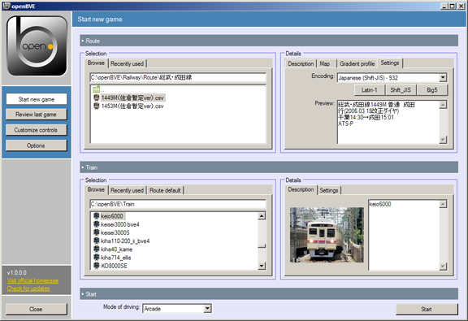
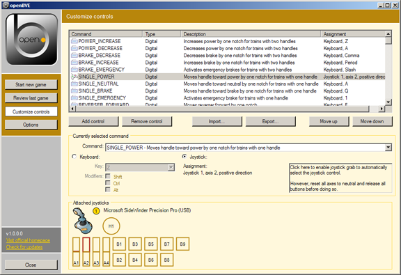
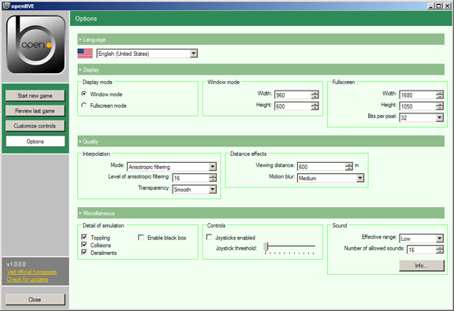
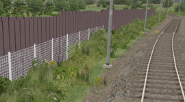
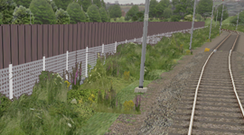
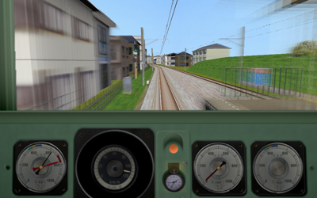

The main menu
Here you can find an overview of the various sections of the main menu.
Start new game

Here, you can select a route and train for driving, along with the mode of driving.
Route
The Browse tab allows you to browse for CSV or RW routes. These should be located somewhere in your Railway\Route folder. Via the Recently used tab, you can select among the 10 last used routes.
Once a route is selected, details will appear on the right, giving a description, map, gradient profile and settings. In the Settings tab, you should select the correct encoding used by the route file, or otherwise, the route might not be parsed correctly or mojibake
might be displayed. There are three preset encodings to choose from, along with a list to choose the rest. Routes encoded in Unicode are usually automatically detected and require no further interaction.
The train associated with the route is automatically selected if found.
Train
The Browse tab allows you to browse for train folders. These should be located somewhere in your Train folder. Via the Recently used tab, you can select among the 10 last used trains.
Once a train is selected, details will appear on the right, giving a description and settings. In the Settings tab, you should select the correct encoding used by the train files, or otherwise, mojibake
might be displayed in the descriptions. There are three preset encodings to choose from, along with a list to choose the rest. Trains encoded in Unicode are usually automatically detected and require no further interaction.
Start
Select the mode of driving, then click on Start to finally start.
Review last game
Documentation for this page is not available.
Customize controls

Here, you can map any control to any of the supported peripherals: the keyboard, and joysticks. Click on any control in order to edit it. You can also add more controls, e.g. in the case you want a certain functionality to be both available on keyboard and joystick. Please note that for joystick support, this must be enabled in the Options page.
There are three types of commands:
- Digital
- This is a simple yes/no command. Press and hold a key or a joystick button, then release again. If you map a Digital command to a joystick axis, you need to move the axis by 2/3 to achieve the on state, then move back to 1/3 to achieve the off state again.
- Analog (half axis)
- This is a command with a continuous range of states. If you map this to the keyboard, a joystick button or joystick hat, you will get either 0% or 100% of the range, just as with Digital commands. If you map this to a joystick axis, only half of the axis will be sensitive to the command, meaning releasing the axis fully gives 0%. This is mostly suited for the stick.
- Analog (full axis)
- This is a command with a continuous range of states. If you map this to the keyboard, a joystick button or joystick hat, you will get either 0% or 100% of the range, just as with Digital commands. If you map this to a joystick axis, the full axis will be sensitive to the command, meaning that 0% will be one extreme of the axis, and 100% the other extreme. This is mostly suited for throttles.
Map POWER_INCREASE (digital) to the lower part of a gamepad's vertical axis, and POWER_DECREASE (digital) to the upper part of the vertical axis. Pressing up or down will decrease or increase by one power notch for every time you press.
Map POWER_HALFAXIS (analog half-axis) to the lower part of a stick's vertical axis, and BRAKE_HALFAXIS (analog half-axis) to the upper part. Power can be continuously controlled on the lower part of the axis, and the brake on the upper part.
Map POWER_FULLAXIS (analog full-axis) to the lower part of a throttle. Full power will be at the lower extreme of the throttle, and zero power at the upper extreme. Center corresponds to 50% power here.
Options

You can select the interface language, display modes, quality settings and some other settings here.
Display
While you can select any display resolution for window mode, make sure that any resolution you enter for fullscreen mode is supported by your graphics card. Ideally, you should select a resolution that matches the aspect ratio of your monitor.
Interpolation
The interpolation modes are illustrated here. Ideally, you should select anisotropic filtering for best quality, but might be forced to use a compromise when you experience low performance.
Please note that for the first time you run openBVE, the program does not know yet what the maximum level of anisotropic filtering is which the hardware supports. In this case, the textbox Level of anisotropic filtering will read 0, and openBVE will simply use the maximum setting available. Subsequently, you can choose any level here to make a trade-off between performance (low values) and quality (high values).
There are two transparency options available: Sharp and Smooth. These only apply for a mipmapping mode or for anisotropic filtering, and are illustrated in the following:
|  |  |
| Sharp | Smooth |
On textures with small transparent regions, the Sharp mode (illustrated left) creates a crispy look, and the texture might be cut off in the distant. With Smooth (illustrated right), these transparent regions will appear very smoothly filtered, also in the distant, however, this is at the expense of some performance.
Distance effects
You can set the viewing distance here. At least 600 meters is recommended, although if you experience very low performance, you can also reduce this value.
Additionally, you can enable motion blur to get a better feeling for the speed you drive at. This demands some performance and is usually only recommended if you can get at least 30 to 40 frames per second even with motion blur enabled. Otherwise, the effect might be counter-productive and could manifest as stutter more than it does as blur. This is an example of motion blur applied at a high speed:

Detail of simulation
You can enable or disable toppling (too high speed in curves lets the train leave off the rail), collisions (with other trains or buffer stops) and derailments here (due to toppling or collisions).
The black box allows you to log the status of the train in regular intervals. This is mainly intended for developers as a debugging tool or for people who want to create a more detailed analysis of their driving performance. Please see the page about the black box
for more information.
Sound
The effective range of sounds controls at which point distant sounds are cut off. A higher effective range allows you to hear more sounds in the distance, but will usually also lead to more sounds playing at the same time.
The amount of sounds which can be played simultaneously is hardware-dependent. You can set the number of allowed sounds here. If too many sounds are playing, distant sounds will be automatically faded away until the number of currently playing sounds does not exceed the set value. Please don't confuse this setting with the number of sounds that can be played simultaneously (that depends on the hardware) - it represents the number of sounds that are allowed to be playing to keep the number of sounds hardware-compliant.